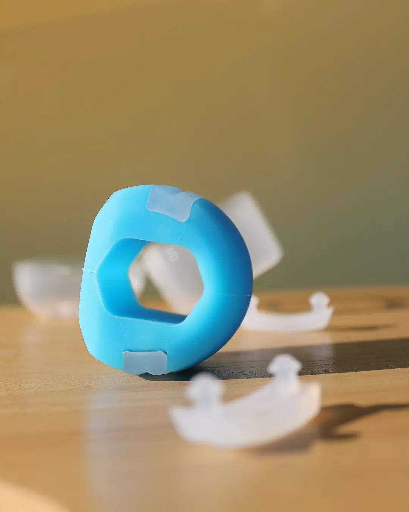
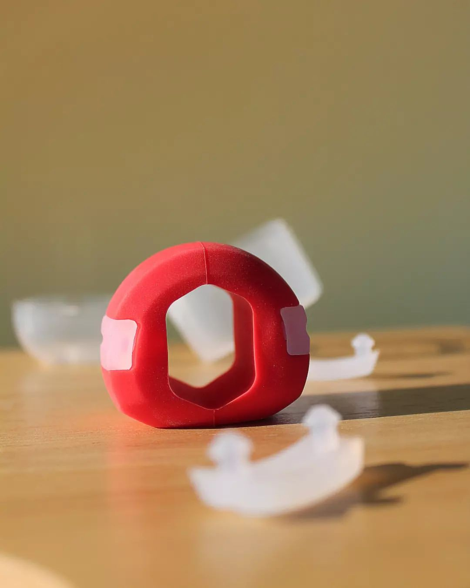
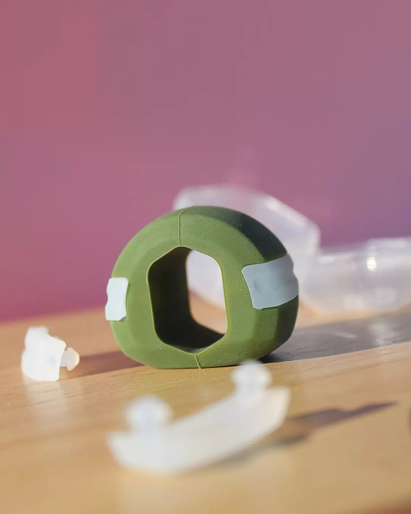
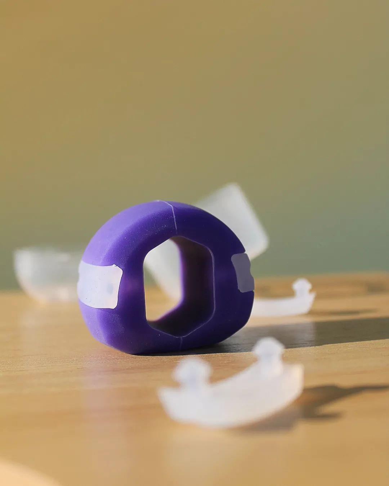
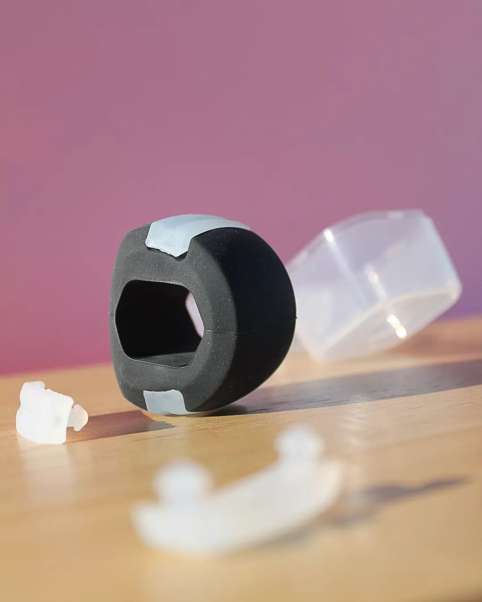

Jawline Azərbaycan
Məhsul haqqında daha ətraflı
JawLine topları üzünüzdəki əzələləri inkşaf etdirərək, daha kəskin
çənə xətti və daha estetik bir görünüş əldə etməyinizə kömək edir.
- Boyun və çənədə 57 əzələ qrupunu inkşaf etdirir.
- Üzdə ki yağ qatını azaldır, daha estetik görüntü verir.
- Buxağı ərdirir, yaranan qırışları azaldır.
- Hərəkət sayəsində üzdə qan dövranını işə salır, dərini cavanlaşdırır.
- Sarsıntı riskini azaldır.
- Çənə xəttini daha bəlirgin və sərt edir.
- Çənə və üz əzələlərini gücləndirir.
- Fiziki görünüşü yaxşılaşdırır.
- Fiziki və zehni stresi azaldır.
- Çənədə yarana biləcək hər hansı bir zədə riskini azaldır.
Məhsul FDA tərəfindən təsdiqlənmiş xüsusi qida silikonu ilə emal olunub.




